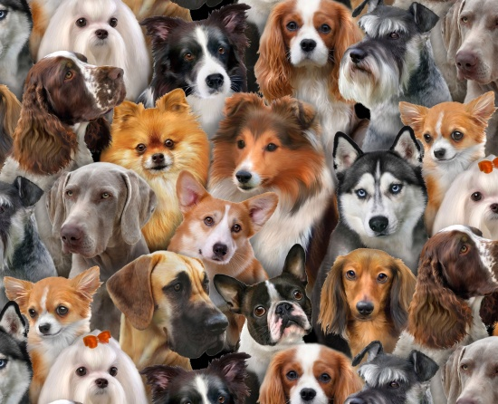

Plemena psů byla vyšlechtěna z prapůvodního předka všech psů, tj. vlka. Během dlouhé historie domestikace psa bylo vyšlechtěno bezpočet plemen, která se od sebe liší vlastnostmi jak fyzickými (tzn. délkou a barvou srsti, velikostí, postavou), tak povahovými; z toho se také odvíjí i využití jednotlivých plemen k velmi různým účelům. Existují i nedomestikovaná plemena psů, příkladem je třeba novoguinejský zpívající pes (také známý jako dingo pralesní) nebo známější pes dingo, kteří ale oficiálně jako plemena uznaní nejsou (přestože jejich předkové byli domestikovaní psi).

Zdroj: Wikipedia